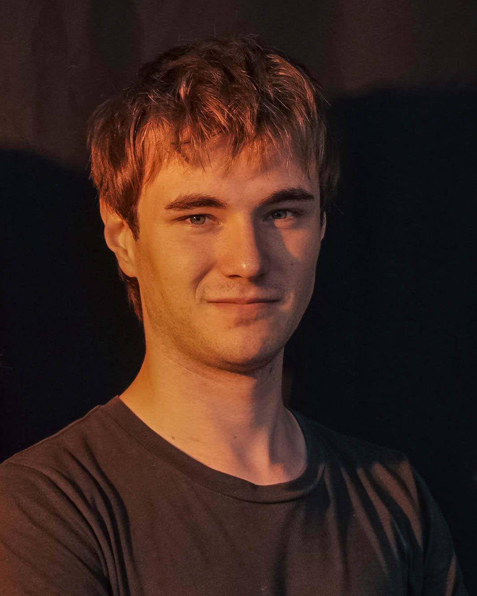
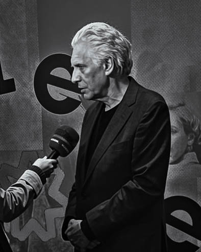
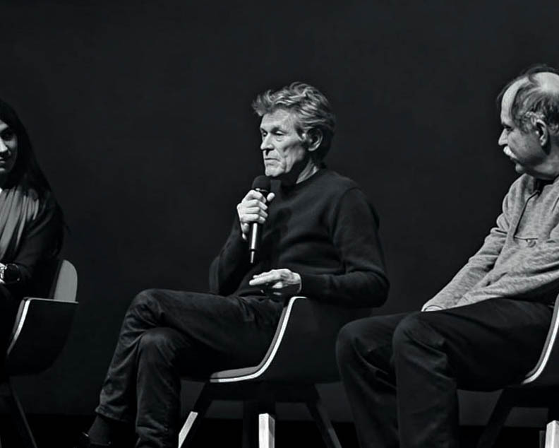
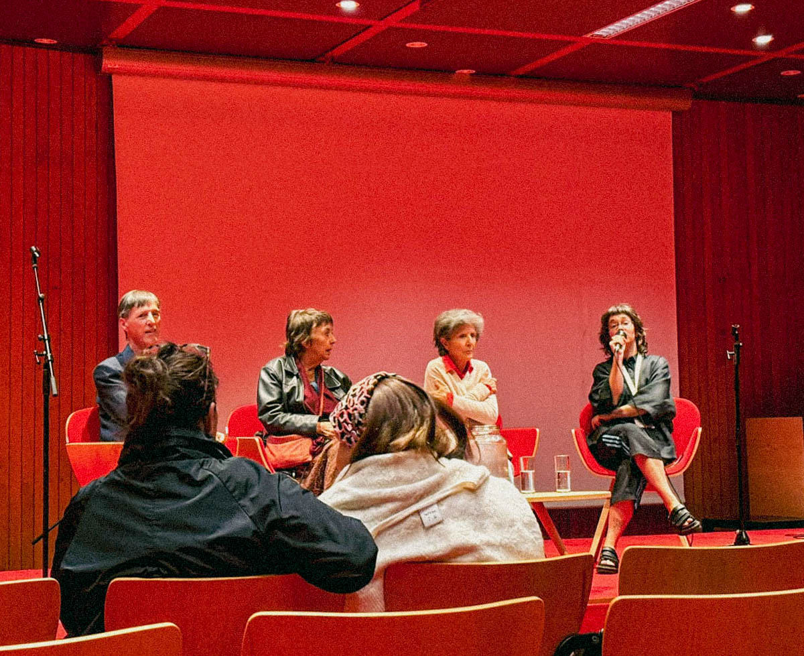
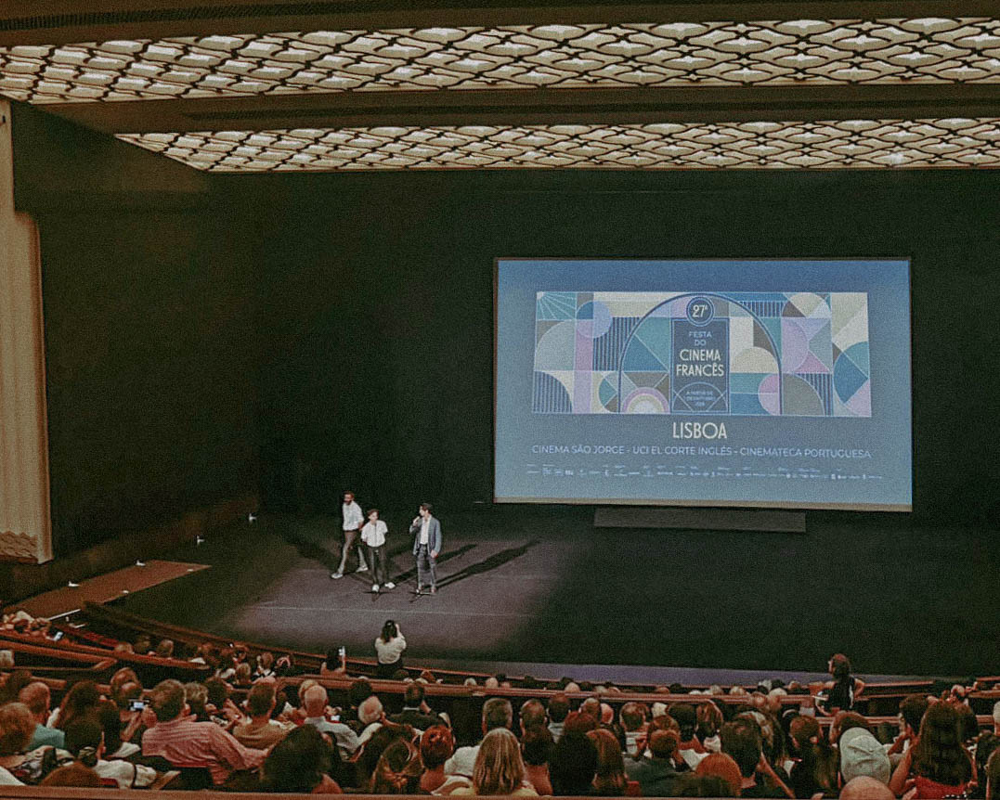
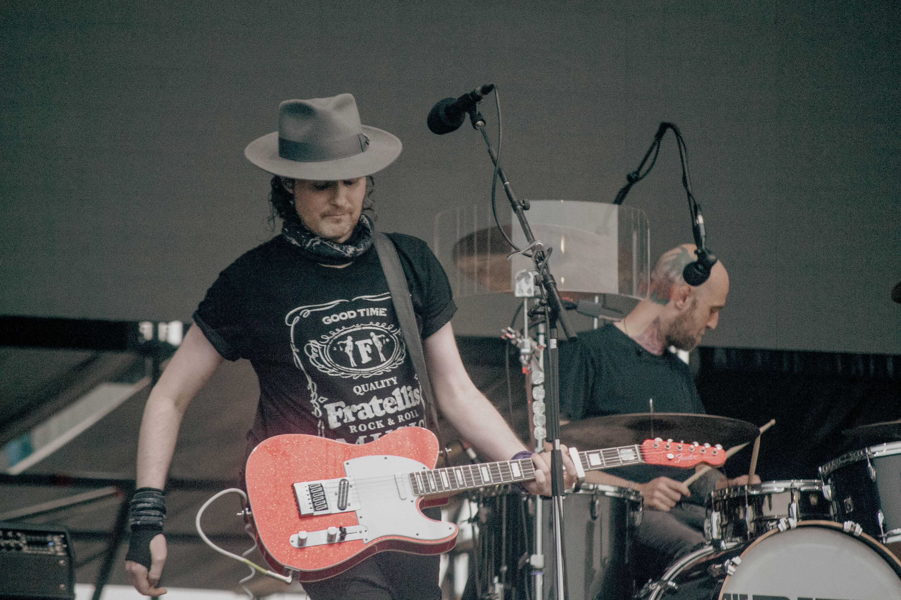
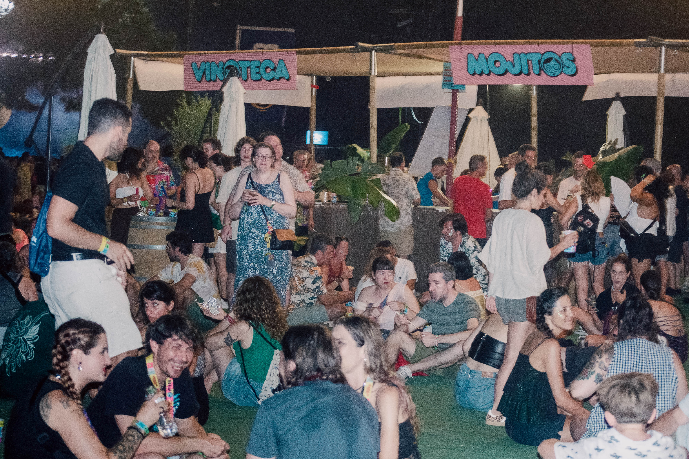

Marc Jaén nació en 2005 y reside en Valencia. Escribe ficción, ensayo, periodismo y guion, con especial interés en la cultura pop en todas sus formas. Es redactor en la revista 35mm y ha publicado en El País (sección de Opinión), Indyrock, Letralia, Revista Icónica y Som Gandia. También ha participado en varios cortometrajes como guionista y ayudante de dirección.
MinimalistaMaximalista

Crónica · LEFFEST 2026 · 35mm
Cara a cara con Cronenberg y Dafoe: crónica del LEFFEST 2026
«La desconfianza se contagia más rápido que cualquier dato. Un sistema que confía en sí mismo no pone trabas al voto, sea desde Lisboa o desde Lugo.»
Obra
Pincha sobre una categoría para ver las publicaciones.
35mm
Vicent Ballester: «Cuando un niño no tiene una enseñanza musical, se le corta la posibilidad de ser más feliz»
Entrevista al guitarrista y cofundador del Conservatori Tenor Cortis de Dénia sobre la enseñanza musical, el estado del centro y el lugar de las artes en la escuela.
No siembren la duda
Carta al director sobre el voto en el extranjero, publicada en la sección de Opinión de El País.
Deambular en el interior del mito
Crónica y fotografías propias sobre el Festival Internacional de Benicàssim 2026.
Doclisboa 2026: reportaje y críticas
Reportaje y críticas de la 24ª edición de Doclisboa, festival de cine documental de Lisboa.
Festa do Cinema Francês 2026: Críticas
Reportaje de la 27ª edición de la Festa do Cinema Francês de Lisboa.
Un día en Frikidays Gandia 2026
Artículo del salón de cómic en Gandia.
Concluye la Novena edición del Visoren Fest de Gandia
Artículo del festival de música de Gandia.
Trayectoria
Jurado de cortometrajes
Miembro del jurado en la sección de cortometrajes de la 41ª edición de Cinema Jove, festival internacional de cine de València.
Coordinador del Biblioclub
Coordinación del club de lectura de la Universitat Politècnica de València.
Coordinador del Cineclub
Coordinación del club de cine de la Universitat Politècnica de València.
Jurado del Cortoons
Miembro del jurado en Cortoons Gandia, el Festival Internacional de Cortometrajes de Animación de Gandia.
Ayudante en el congreso de la SEP
Apoyo en la organización del XXXII Congreso Internacional de la Sociedad Española de Periodística, celebrado en el Campus de Gandia de la UPV.
Festivales
Fotografías propias de las coberturas.





